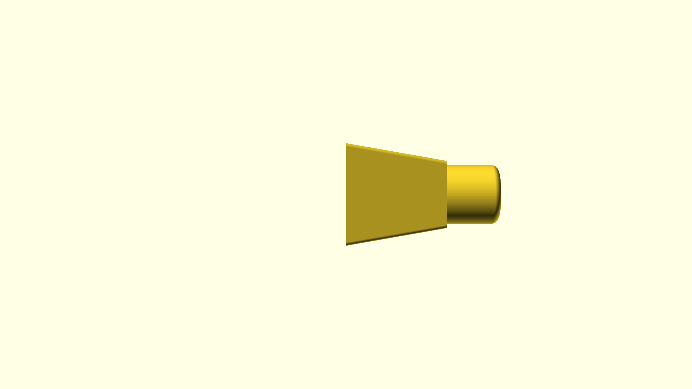
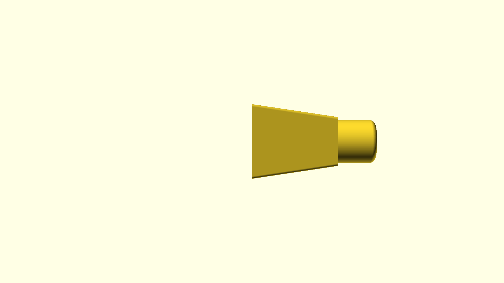
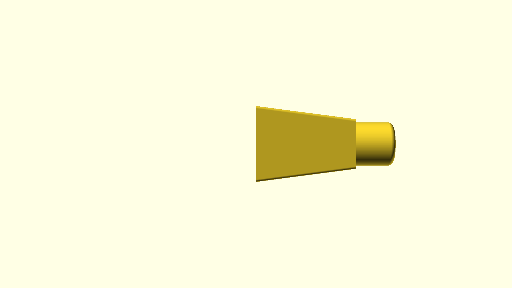
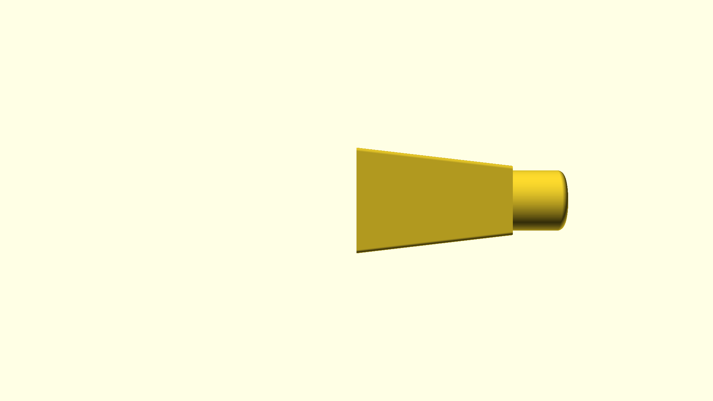
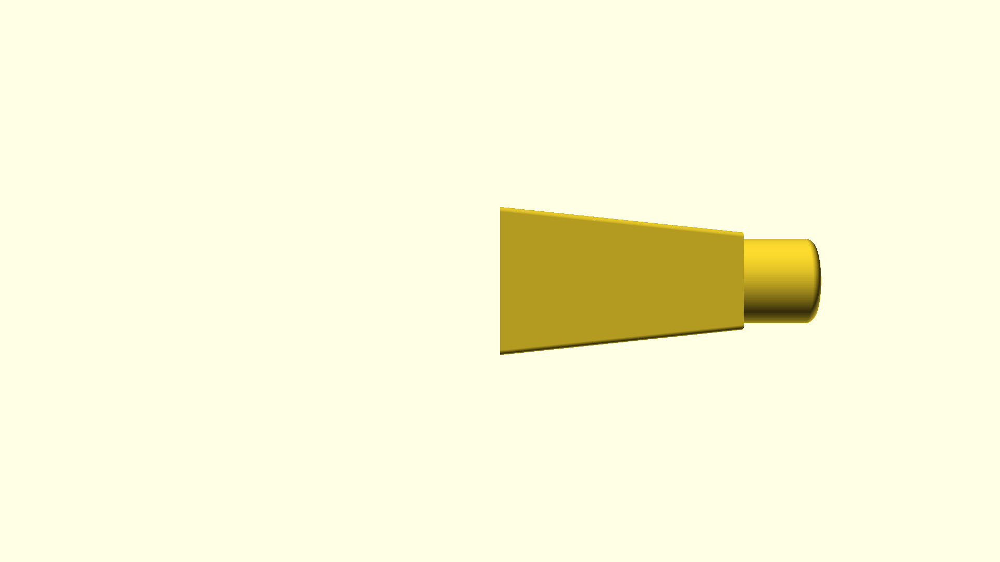
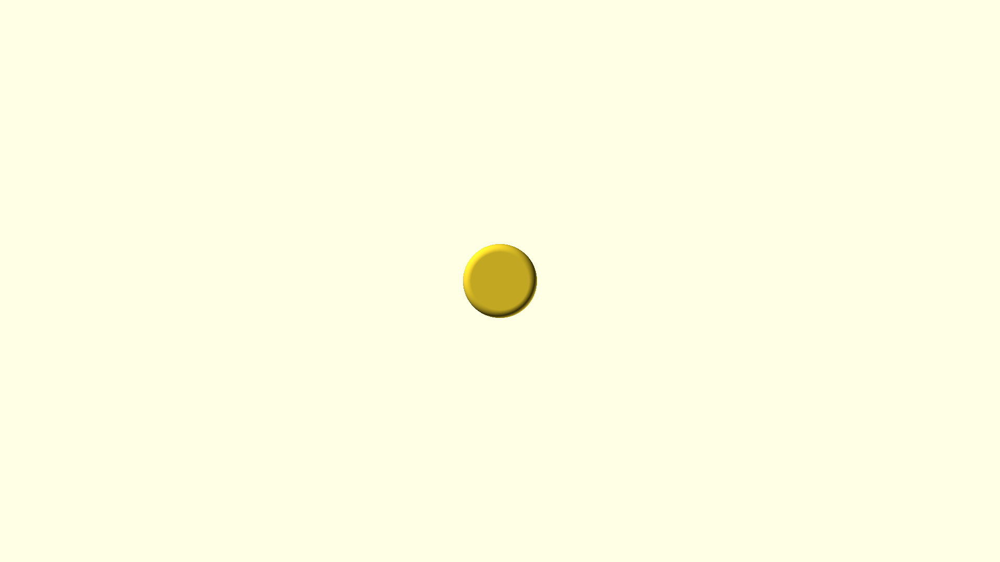
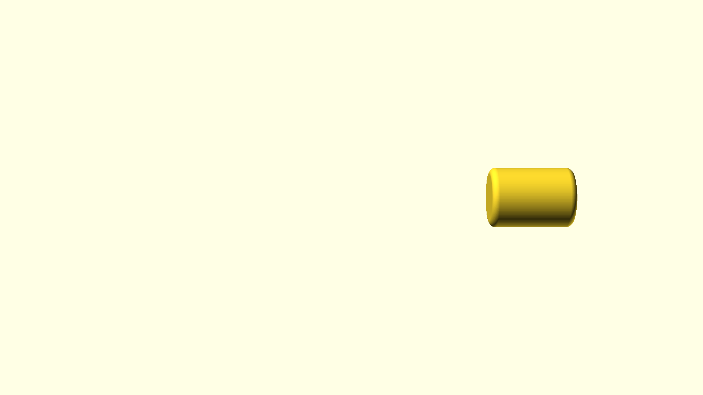

Input Paths
| Path |
|---|
| ./hand-press-plate.scad |
STL Generation Results
| Instance | Output Path | Command | Time Taken | Params | Error |
|---|---|---|---|---|---|
| examples/hand-press-plate/export/v0_1/hand-press-plate-{renderType}-large-25-{plateAttachHeight}-30.stl | openscad -o exa...openscad -o examples/hand-press-plate/export/v0_1/hand-press-plate-{renderType}-large-25-{plateAttachHeight}-30.stl -D 'plateType="large"' -D 'attachCyliderHeight=25' -D 'plateHeight=30' -D 'designFileName="hand-press-plate"' -D 'name=""' -D 'version="v0.1"' -D 'part_id_letter="A"' "./examples/hand-press-plate/hand-press-plate.scad" --render --backend=manifold | 9.486725666s | Params | ||
| examples/hand-press-plate/export/v0_1/hand-press-plate-{renderType}-large-25-{plateAttachHeight}-35.stl | openscad -o exa...openscad -o examples/hand-press-plate/export/v0_1/hand-press-plate-{renderType}-large-25-{plateAttachHeight}-35.stl -D 'designFileName="hand-press-plate"' -D 'name=""' -D 'version="v0.1"' -D 'plateType="large"' -D 'attachCyliderHeight=25' -D 'plateHeight=35' -D 'part_id_letter="B"' "./examples/hand-press-plate/hand-press-plate.scad" --render --backend=manifold | 9.236029625s | Params | ||
| examples/hand-press-plate/export/v0_1/hand-press-plate-{renderType}-large-25-{plateAttachHeight}-40.stl | openscad -o exa...openscad -o examples/hand-press-plate/export/v0_1/hand-press-plate-{renderType}-large-25-{plateAttachHeight}-40.stl -D 'name=""' -D 'version="v0.1"' -D 'plateType="large"' -D 'attachCyliderHeight=25' -D 'plateHeight=40' -D 'designFileName="hand-press-plate"' -D 'part_id_letter="C"' "./examples/hand-press-plate/hand-press-plate.scad" --render --backend=manifold | 9.435056375s | Params | ||
| examples/hand-press-plate/export/v0_1/hand-press-plate-{renderType}-large-25-{plateAttachHeight}-45.stl | openscad -o exa...openscad -o examples/hand-press-plate/export/v0_1/hand-press-plate-{renderType}-large-25-{plateAttachHeight}-45.stl -D 'plateType="large"' -D 'attachCyliderHeight=25' -D 'plateHeight=45' -D 'designFileName="hand-press-plate"' -D 'name=""' -D 'version="v0.1"' -D 'part_id_letter="D"' "./examples/hand-press-plate/hand-press-plate.scad" --render --backend=manifold | 9.962523s | Params | ||
| examples/hand-press-plate/export/v0_1/hand-press-plate-{renderType}-large-25-{plateAttachHeight}-50.stl | openscad -o exa...openscad -o examples/hand-press-plate/export/v0_1/hand-press-plate-{renderType}-large-25-{plateAttachHeight}-50.stl -D 'designFileName="hand-press-plate"' -D 'name=""' -D 'version="v0.1"' -D 'plateType="large"' -D 'attachCyliderHeight=25' -D 'plateHeight=50' -D 'part_id_letter="E"' "./examples/hand-press-plate/hand-press-plate.scad" --render --backend=manifold | 9.854577083s | Params | ||
| examples/hand-press-plate/export/v0_1/hand-press-plate-{renderType}-none-25-{plateAttachHeight}-{plateHeight}.stl | openscad -o exa...openscad -o examples/hand-press-plate/export/v0_1/hand-press-plate-{renderType}-none-25-{plateAttachHeight}-{plateHeight}.stl -D 'version="v0.1"' -D 'plateType="none"' -D 'attachCyliderHeight=25' -D 'designFileName="hand-press-plate"' -D 'name=""' -D 'part_id_letter="F"' "./examples/hand-press-plate/hand-press-plate.scad" --render --backend=manifold | 8.619779125s | Params |
Image Generation Results
| Instance | Camera | Output Path | Command | Time Taken | Camera Coordinates | Preview | Error |
|---|---|---|---|---|---|---|---|
| top | examples/hand-press-plate/export/v0_1/hand-press-plate-{renderType}-large-25-{plateAttachHeight}-30-top.png | /opt/homebrew/b.../opt/homebrew/bin/openscad -o examples/hand-press-plate/export/v0_1/hand-press-plate-{renderType}-large-25-{plateAttachHeight}-30-top.png --imgsize 1920,1080 --projection perspective --camera 0,0,0,0,0,0,300 --preview -D 'version="v0.1"' -D 'plateType="large"' -D 'attachCyliderHeight=25' -D 'plateHeight=30' -D 'designFileName="hand-press-plate"' -D 'name=""' ./examples/hand-press-plate/hand-press-plate.scad | 6.567318042s | View Camera CoordinatesFormat: x,y,z,rotx,roty,rotz,distance
Coordinates: 0,0,0,0,0,0,300 Params | |||
| left | examples/hand-press-plate/export/v0_1/hand-press-plate-{renderType}-large-25-{plateAttachHeight}-30-left.png | /opt/homebrew/b.../opt/homebrew/bin/openscad -o examples/hand-press-plate/export/v0_1/hand-press-plate-{renderType}-large-25-{plateAttachHeight}-30-left.png --imgsize 1920,1080 --projection perspective --camera 0,0,0,0,90,0,300 --preview -D 'plateType="large"' -D 'attachCyliderHeight=25' -D 'plateHeight=30' -D 'designFileName="hand-press-plate"' -D 'name=""' -D 'version="v0.1"' ./examples/hand-press-plate/hand-press-plate.scad | 6.634917083s | View Camera CoordinatesFormat: x,y,z,rotx,roty,rotz,distance
Coordinates: 0,0,0,0,90,0,300 Params |  | ||
| top | examples/hand-press-plate/export/v0_1/hand-press-plate-{renderType}-large-25-{plateAttachHeight}-30-top.png | /opt/homebrew/b.../opt/homebrew/bin/openscad -o examples/hand-press-plate/export/v0_1/hand-press-plate-{renderType}-large-25-{plateAttachHeight}-30-top.png --imgsize 1920,1080 --projection perspective --camera 0,0,0,0,0,0,300 --preview -D 'designFileName="hand-press-plate"' -D 'name=""' -D 'version="v0.1"' -D 'plateType="large"' -D 'attachCyliderHeight=25' -D 'plateHeight=30' ./examples/hand-press-plate/hand-press-plate.scad | 6.611286625s | View Camera CoordinatesFormat: x,y,z,rotx,roty,rotz,distance
Coordinates: 0,0,0,0,0,0,300 Params | |||
| left | examples/hand-press-plate/export/v0_1/hand-press-plate-{renderType}-large-25-{plateAttachHeight}-30-left.png | /opt/homebrew/b.../opt/homebrew/bin/openscad -o examples/hand-press-plate/export/v0_1/hand-press-plate-{renderType}-large-25-{plateAttachHeight}-30-left.png --imgsize 1920,1080 --projection perspective --camera 0,0,0,0,90,0,300 --preview -D 'attachCyliderHeight=25' -D 'plateHeight=30' -D 'designFileName="hand-press-plate"' -D 'name=""' -D 'version="v0.1"' -D 'plateType="large"' ./examples/hand-press-plate/hand-press-plate.scad | 6.629617875s | View Camera CoordinatesFormat: x,y,z,rotx,roty,rotz,distance
Coordinates: 0,0,0,0,90,0,300 Params | |||
| top | examples/hand-press-plate/export/v0_1/hand-press-plate-{renderType}-large-25-{plateAttachHeight}-35-top.png | /opt/homebrew/b.../opt/homebrew/bin/openscad -o examples/hand-press-plate/export/v0_1/hand-press-plate-{renderType}-large-25-{plateAttachHeight}-35-top.png --imgsize 1920,1080 --projection perspective --camera 0,0,0,0,0,0,300 --preview -D 'plateHeight=35' -D 'designFileName="hand-press-plate"' -D 'name=""' -D 'version="v0.1"' -D 'plateType="large"' -D 'attachCyliderHeight=25' ./examples/hand-press-plate/hand-press-plate.scad | 6.579775292s | View Camera CoordinatesFormat: x,y,z,rotx,roty,rotz,distance
Coordinates: 0,0,0,0,0,0,300 Params |  | ||
| left | examples/hand-press-plate/export/v0_1/hand-press-plate-{renderType}-large-25-{plateAttachHeight}-35-left.png | /opt/homebrew/b.../opt/homebrew/bin/openscad -o examples/hand-press-plate/export/v0_1/hand-press-plate-{renderType}-large-25-{plateAttachHeight}-35-left.png --imgsize 1920,1080 --projection perspective --camera 0,0,0,0,90,0,300 --preview -D 'attachCyliderHeight=25' -D 'plateHeight=35' -D 'designFileName="hand-press-plate"' -D 'name=""' -D 'version="v0.1"' -D 'plateType="large"' ./examples/hand-press-plate/hand-press-plate.scad | 6.744069625s | View Camera CoordinatesFormat: x,y,z,rotx,roty,rotz,distance
Coordinates: 0,0,0,0,90,0,300 Params |  | ||
| top | examples/hand-press-plate/export/v0_1/hand-press-plate-{renderType}-large-25-{plateAttachHeight}-35-top.png | /opt/homebrew/b.../opt/homebrew/bin/openscad -o examples/hand-press-plate/export/v0_1/hand-press-plate-{renderType}-large-25-{plateAttachHeight}-35-top.png --imgsize 1920,1080 --projection perspective --camera 0,0,0,0,0,0,300 --preview -D 'name=""' -D 'version="v0.1"' -D 'plateType="large"' -D 'attachCyliderHeight=25' -D 'plateHeight=35' -D 'designFileName="hand-press-plate"' ./examples/hand-press-plate/hand-press-plate.scad | 6.771346959s | View Camera CoordinatesFormat: x,y,z,rotx,roty,rotz,distance
Coordinates: 0,0,0,0,0,0,300 Params | | ||
| left | examples/hand-press-plate/export/v0_1/hand-press-plate-{renderType}-large-25-{plateAttachHeight}-35-left.png | /opt/homebrew/b.../opt/homebrew/bin/openscad -o examples/hand-press-plate/export/v0_1/hand-press-plate-{renderType}-large-25-{plateAttachHeight}-35-left.png --imgsize 1920,1080 --projection perspective --camera 0,0,0,0,90,0,300 --preview -D 'attachCyliderHeight=25' -D 'plateHeight=35' -D 'designFileName="hand-press-plate"' -D 'name=""' -D 'version="v0.1"' -D 'plateType="large"' ./examples/hand-press-plate/hand-press-plate.scad | 6.837301875s | View Camera CoordinatesFormat: x,y,z,rotx,roty,rotz,distance
Coordinates: 0,0,0,0,90,0,300 Params | |||
| top | examples/hand-press-plate/export/v0_1/hand-press-plate-{renderType}-large-25-{plateAttachHeight}-40-top.png | /opt/homebrew/b.../opt/homebrew/bin/openscad -o examples/hand-press-plate/export/v0_1/hand-press-plate-{renderType}-large-25-{plateAttachHeight}-40-top.png --imgsize 1920,1080 --projection perspective --camera 0,0,0,0,0,0,300 --preview -D 'plateHeight=40' -D 'designFileName="hand-press-plate"' -D 'name=""' -D 'version="v0.1"' -D 'plateType="large"' -D 'attachCyliderHeight=25' ./examples/hand-press-plate/hand-press-plate.scad | 6.755673875s | View Camera CoordinatesFormat: x,y,z,rotx,roty,rotz,distance
Coordinates: 0,0,0,0,0,0,300 Params |  | ||
| left | examples/hand-press-plate/export/v0_1/hand-press-plate-{renderType}-large-25-{plateAttachHeight}-40-left.png | /opt/homebrew/b.../opt/homebrew/bin/openscad -o examples/hand-press-plate/export/v0_1/hand-press-plate-{renderType}-large-25-{plateAttachHeight}-40-left.png --imgsize 1920,1080 --projection perspective --camera 0,0,0,0,90,0,300 --preview -D 'name=""' -D 'version="v0.1"' -D 'plateType="large"' -D 'attachCyliderHeight=25' -D 'plateHeight=40' -D 'designFileName="hand-press-plate"' ./examples/hand-press-plate/hand-press-plate.scad | 6.695336458s | View Camera CoordinatesFormat: x,y,z,rotx,roty,rotz,distance
Coordinates: 0,0,0,0,90,0,300 Params |  | ||
| top | examples/hand-press-plate/export/v0_1/hand-press-plate-{renderType}-large-25-{plateAttachHeight}-40-top.png | /opt/homebrew/b.../opt/homebrew/bin/openscad -o examples/hand-press-plate/export/v0_1/hand-press-plate-{renderType}-large-25-{plateAttachHeight}-40-top.png --imgsize 1920,1080 --projection perspective --camera 0,0,0,0,0,0,300 --preview -D 'plateType="large"' -D 'attachCyliderHeight=25' -D 'plateHeight=40' -D 'designFileName="hand-press-plate"' -D 'name=""' -D 'version="v0.1"' ./examples/hand-press-plate/hand-press-plate.scad | 6.664558792s | View Camera CoordinatesFormat: x,y,z,rotx,roty,rotz,distance
Coordinates: 0,0,0,0,0,0,300 Params | | ||
| left | examples/hand-press-plate/export/v0_1/hand-press-plate-{renderType}-large-25-{plateAttachHeight}-40-left.png | /opt/homebrew/b.../opt/homebrew/bin/openscad -o examples/hand-press-plate/export/v0_1/hand-press-plate-{renderType}-large-25-{plateAttachHeight}-40-left.png --imgsize 1920,1080 --projection perspective --camera 0,0,0,0,90,0,300 --preview -D 'plateHeight=40' -D 'designFileName="hand-press-plate"' -D 'name=""' -D 'version="v0.1"' -D 'plateType="large"' -D 'attachCyliderHeight=25' ./examples/hand-press-plate/hand-press-plate.scad | 6.591076083s | View Camera CoordinatesFormat: x,y,z,rotx,roty,rotz,distance
Coordinates: 0,0,0,0,90,0,300 Params | |||
| top | examples/hand-press-plate/export/v0_1/hand-press-plate-{renderType}-large-25-{plateAttachHeight}-45-top.png | /opt/homebrew/b.../opt/homebrew/bin/openscad -o examples/hand-press-plate/export/v0_1/hand-press-plate-{renderType}-large-25-{plateAttachHeight}-45-top.png --imgsize 1920,1080 --projection perspective --camera 0,0,0,0,0,0,300 --preview -D 'designFileName="hand-press-plate"' -D 'name=""' -D 'version="v0.1"' -D 'plateType="large"' -D 'attachCyliderHeight=25' -D 'plateHeight=45' ./examples/hand-press-plate/hand-press-plate.scad | 6.653765833s | View Camera CoordinatesFormat: x,y,z,rotx,roty,rotz,distance
Coordinates: 0,0,0,0,0,0,300 Params |  | ||
| left | examples/hand-press-plate/export/v0_1/hand-press-plate-{renderType}-large-25-{plateAttachHeight}-45-left.png | /opt/homebrew/b.../opt/homebrew/bin/openscad -o examples/hand-press-plate/export/v0_1/hand-press-plate-{renderType}-large-25-{plateAttachHeight}-45-left.png --imgsize 1920,1080 --projection perspective --camera 0,0,0,0,90,0,300 --preview -D 'name=""' -D 'version="v0.1"' -D 'plateType="large"' -D 'attachCyliderHeight=25' -D 'plateHeight=45' -D 'designFileName="hand-press-plate"' ./examples/hand-press-plate/hand-press-plate.scad | 6.671652458s | View Camera CoordinatesFormat: x,y,z,rotx,roty,rotz,distance
Coordinates: 0,0,0,0,90,0,300 Params |  | ||
| top | examples/hand-press-plate/export/v0_1/hand-press-plate-{renderType}-large-25-{plateAttachHeight}-45-top.png | /opt/homebrew/b.../opt/homebrew/bin/openscad -o examples/hand-press-plate/export/v0_1/hand-press-plate-{renderType}-large-25-{plateAttachHeight}-45-top.png --imgsize 1920,1080 --projection perspective --camera 0,0,0,0,0,0,300 --preview -D 'version="v0.1"' -D 'plateType="large"' -D 'attachCyliderHeight=25' -D 'plateHeight=45' -D 'designFileName="hand-press-plate"' -D 'name=""' ./examples/hand-press-plate/hand-press-plate.scad | 6.906720375s | View Camera CoordinatesFormat: x,y,z,rotx,roty,rotz,distance
Coordinates: 0,0,0,0,0,0,300 Params | | ||
| left | examples/hand-press-plate/export/v0_1/hand-press-plate-{renderType}-large-25-{plateAttachHeight}-45-left.png | /opt/homebrew/b.../opt/homebrew/bin/openscad -o examples/hand-press-plate/export/v0_1/hand-press-plate-{renderType}-large-25-{plateAttachHeight}-45-left.png --imgsize 1920,1080 --projection perspective --camera 0,0,0,0,90,0,300 --preview -D 'designFileName="hand-press-plate"' -D 'name=""' -D 'version="v0.1"' -D 'plateType="large"' -D 'attachCyliderHeight=25' -D 'plateHeight=45' ./examples/hand-press-plate/hand-press-plate.scad | 6.736185167s | View Camera CoordinatesFormat: x,y,z,rotx,roty,rotz,distance
Coordinates: 0,0,0,0,90,0,300 Params | |||
| top | examples/hand-press-plate/export/v0_1/hand-press-plate-{renderType}-large-25-{plateAttachHeight}-50-top.png | /opt/homebrew/b.../opt/homebrew/bin/openscad -o examples/hand-press-plate/export/v0_1/hand-press-plate-{renderType}-large-25-{plateAttachHeight}-50-top.png --imgsize 1920,1080 --projection perspective --camera 0,0,0,0,0,0,300 --preview -D 'designFileName="hand-press-plate"' -D 'name=""' -D 'version="v0.1"' -D 'plateType="large"' -D 'attachCyliderHeight=25' -D 'plateHeight=50' ./examples/hand-press-plate/hand-press-plate.scad | 6.843836625s | View Camera CoordinatesFormat: x,y,z,rotx,roty,rotz,distance
Coordinates: 0,0,0,0,0,0,300 Params |  | ||
| left | examples/hand-press-plate/export/v0_1/hand-press-plate-{renderType}-large-25-{plateAttachHeight}-50-left.png | /opt/homebrew/b.../opt/homebrew/bin/openscad -o examples/hand-press-plate/export/v0_1/hand-press-plate-{renderType}-large-25-{plateAttachHeight}-50-left.png --imgsize 1920,1080 --projection perspective --camera 0,0,0,0,90,0,300 --preview -D 'plateType="large"' -D 'attachCyliderHeight=25' -D 'plateHeight=50' -D 'designFileName="hand-press-plate"' -D 'name=""' -D 'version="v0.1"' ./examples/hand-press-plate/hand-press-plate.scad | 6.772359166s | View Camera CoordinatesFormat: x,y,z,rotx,roty,rotz,distance
Coordinates: 0,0,0,0,90,0,300 Params |  | ||
| top | examples/hand-press-plate/export/v0_1/hand-press-plate-{renderType}-large-25-{plateAttachHeight}-50-top.png | /opt/homebrew/b.../opt/homebrew/bin/openscad -o examples/hand-press-plate/export/v0_1/hand-press-plate-{renderType}-large-25-{plateAttachHeight}-50-top.png --imgsize 1920,1080 --projection perspective --camera 0,0,0,0,0,0,300 --preview -D 'version="v0.1"' -D 'plateType="large"' -D 'attachCyliderHeight=25' -D 'plateHeight=50' -D 'designFileName="hand-press-plate"' -D 'name=""' ./examples/hand-press-plate/hand-press-plate.scad | 6.829227959s | View Camera CoordinatesFormat: x,y,z,rotx,roty,rotz,distance
Coordinates: 0,0,0,0,0,0,300 Params | | ||
| left | examples/hand-press-plate/export/v0_1/hand-press-plate-{renderType}-large-25-{plateAttachHeight}-50-left.png | /opt/homebrew/b.../opt/homebrew/bin/openscad -o examples/hand-press-plate/export/v0_1/hand-press-plate-{renderType}-large-25-{plateAttachHeight}-50-left.png --imgsize 1920,1080 --projection perspective --camera 0,0,0,0,90,0,300 --preview -D 'name=""' -D 'version="v0.1"' -D 'plateType="large"' -D 'attachCyliderHeight=25' -D 'plateHeight=50' -D 'designFileName="hand-press-plate"' ./examples/hand-press-plate/hand-press-plate.scad | 6.835382167s | View Camera CoordinatesFormat: x,y,z,rotx,roty,rotz,distance
Coordinates: 0,0,0,0,90,0,300 Params | |||
| top | examples/hand-press-plate/export/v0_1/hand-press-plate-{renderType}-none-25-{plateAttachHeight}-{plateHeight}-top.png | /opt/homebrew/b.../opt/homebrew/bin/openscad -o examples/hand-press-plate/export/v0_1/hand-press-plate-{renderType}-none-25-{plateAttachHeight}-{plateHeight}-top.png --imgsize 1920,1080 --projection perspective --camera 0,0,0,0,0,0,300 --preview -D 'name=""' -D 'version="v0.1"' -D 'plateType="none"' -D 'attachCyliderHeight=25' -D 'designFileName="hand-press-plate"' ./examples/hand-press-plate/hand-press-plate.scad | 5.752822458s | View Camera CoordinatesFormat: x,y,z,rotx,roty,rotz,distance
Coordinates: 0,0,0,0,0,0,300 Params |  | ||
| left | examples/hand-press-plate/export/v0_1/hand-press-plate-{renderType}-none-25-{plateAttachHeight}-{plateHeight}-left.png | /opt/homebrew/b.../opt/homebrew/bin/openscad -o examples/hand-press-plate/export/v0_1/hand-press-plate-{renderType}-none-25-{plateAttachHeight}-{plateHeight}-left.png --imgsize 1920,1080 --projection perspective --camera 0,0,0,0,90,0,300 --preview -D 'version="v0.1"' -D 'plateType="none"' -D 'attachCyliderHeight=25' -D 'designFileName="hand-press-plate"' -D 'name=""' ./examples/hand-press-plate/hand-press-plate.scad | 5.692517709s | View Camera CoordinatesFormat: x,y,z,rotx,roty,rotz,distance
Coordinates: 0,0,0,0,90,0,300 Params |  | ||
| top | examples/hand-press-plate/export/v0_1/hand-press-plate-{renderType}-none-25-{plateAttachHeight}-{plateHeight}-top.png | /opt/homebrew/b.../opt/homebrew/bin/openscad -o examples/hand-press-plate/export/v0_1/hand-press-plate-{renderType}-none-25-{plateAttachHeight}-{plateHeight}-top.png --imgsize 1920,1080 --projection perspective --camera 0,0,0,0,0,0,300 --preview -D 'plateType="none"' -D 'attachCyliderHeight=25' -D 'designFileName="hand-press-plate"' -D 'name=""' -D 'version="v0.1"' ./examples/hand-press-plate/hand-press-plate.scad | 5.700953958s | View Camera CoordinatesFormat: x,y,z,rotx,roty,rotz,distance
Coordinates: 0,0,0,0,0,0,300 Params | |||
| left | examples/hand-press-plate/export/v0_1/hand-press-plate-{renderType}-none-25-{plateAttachHeight}-{plateHeight}-left.png | /opt/homebrew/b.../opt/homebrew/bin/openscad -o examples/hand-press-plate/export/v0_1/hand-press-plate-{renderType}-none-25-{plateAttachHeight}-{plateHeight}-left.png --imgsize 1920,1080 --projection perspective --camera 0,0,0,0,90,0,300 --preview -D 'plateType="none"' -D 'attachCyliderHeight=25' -D 'designFileName="hand-press-plate"' -D 'name=""' -D 'version="v0.1"' ./examples/hand-press-plate/hand-press-plate.scad | 5.822237458s | View Camera CoordinatesFormat: x,y,z,rotx,roty,rotz,distance
Coordinates: 0,0,0,0,90,0,300 Params |
Generated Instances
| Name | Description | Output Path | Ignored Params | Skipped Reason | Images | plateType | attachCyliderHeight | plateHeight | designFileName | name | version |
|---|---|---|---|---|---|---|---|---|---|---|---|
| examples/hand-press-plate/export/v0_1/hand-press-plate-{renderType}-large-25-{plateAttachHeight}-30.stl | [] | large | 25 | 30 | hand-press-plate | v0.1 | |||||
| examples/hand-press-plate/export/v0_1/hand-press-plate-{renderType}-large-25-{plateAttachHeight}-35.stl | [] | large | 25 | 35 | hand-press-plate | v0.1 | |||||
| examples/hand-press-plate/export/v0_1/hand-press-plate-{renderType}-large-25-{plateAttachHeight}-40.stl | [] | large | 25 | 40 | hand-press-plate | v0.1 | |||||
| examples/hand-press-plate/export/v0_1/hand-press-plate-{renderType}-large-25-{plateAttachHeight}-45.stl | [] | large | 25 | 45 | hand-press-plate | v0.1 | |||||
| examples/hand-press-plate/export/v0_1/hand-press-plate-{renderType}-large-25-{plateAttachHeight}-50.stl | [] | large | 25 | 50 | hand-press-plate | v0.1 | |||||
| examples/hand-press-plate/export/v0_1/hand-press-plate-{renderType}-none-25-{plateAttachHeight}-{plateHeight}.stl | [] | none | 25 | N/A | hand-press-plate | v0.1 |
Configuration Details
Config Reference
Example Config File
[[openscadgen]]
name = "My Design"
description = "A simple example design"
input_path = "./designs/my_design.scad"
version = "v1.0"
export_name_format = "{designFileName}-{version}-{name}"
# Global parameters that apply to all instances
[openscadgen.global_params]
material = "PLA"
color = "white"
# Define parameter sets that can be reused
[[openscadgen.param_sets]]
name = "small"
params = { width %3D 10, height %3D 20 }
[[openscadgen.param_sets]]
name = "large"
params = { width %3D 20, height %3D 40 }
# Define instances to generate
[[openscadgen.instances]]
name = "default"
param_sets = "small"
[[openscadgen.instances]]
name = "large"
param_sets = "large"
# Define camera positions for image generation
[[openscadgen.export_images]]
name = "front"
coord = "0,0,0,0,0,0,100"
image_size = "1920,1080"Complete Design Config Reference
[[openscadgen]]
# Required: Name of the design
name = "string" # Required, minimum length 1
# Optional: Description of the design
description = "string" # Optional description
# Optional: Single input path (deprecated, use input_paths instead)
input_path = "string" # Path to the OpenSCAD file
# Optional: Multiple input paths
[[openscadgen.input_paths]]
path = "string" # Required, path to OpenSCAD file
export_name_format = "string" # Optional, format for exported files
param_sets = "string" # Optional, comma-separated list of param sets
params = {} # Optional, map of parameters
skip_images = false # Optional, whether to skip image generation
ignore_param_when_processing = "string" # Optional, params to ignore when processing
# Optional: Output path for generated files
# Optional: Version string
version = "string" # Version of the design
# Optional: Whether to include part ID letter in filenames
no_part_id_letter = false # If true, excludes part ID letter
# Optional: Format for exported filenames
export_name_format = "string" # Format string with {param} placeholders
# Optional: Global parameters applied to all instances
[openscadgen.global_params]
param1 = "value1"
param2 = 42
# Optional: Reusable parameter sets
[[openscadgen.param_sets]]
name = "string" # Name of the parameter set
params = {} # Map of parameters
# Optional: Custom OpenSCAD output format
custom_openscad_output_format = "string" # e.g., "stl", "3mf"
# Optional: Custom OpenSCAD arguments
custom_openscad_args = "string" # Additional OpenSCAD command line arguments
# Optional: Image export quality
export_image_quality = "string" # Quality setting for exported images
# Optional: Camera positions for image generation
[[openscadgen.export_images]]
name = "string" # Name of the camera position
coord = "string" # Camera coordinates (x,y,z,rotx,roty,rotz,distance)
image_size = "string" # Optional, image dimensions (width,height)
param_filter = {} # Optional, filter parameters for this camera
# Optional: Instance configurations
[[openscadgen.instances]]
name = "string" # Name of the instance
description = "string" # Optional description
params = {} # Optional, map of parameters
param_sets = "string" # Optional, comma-separated list of param sets
param_numberation_keys = "string" # Optional, comma-separated list of keys to number
skip_images = false # Optional, whether to skip image generation
# Optional: Whether to use manifold operations
dont_use_manifold = false # If true, disables manifold operations